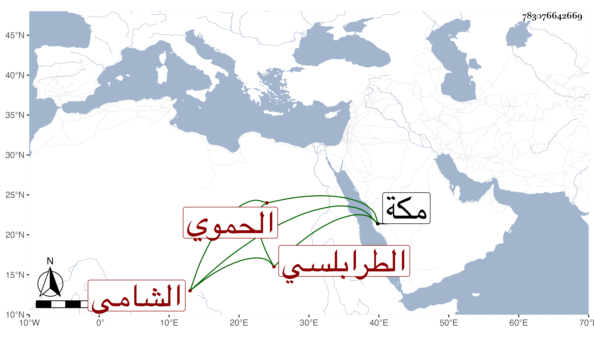

0902Sakhawi.DawLamic.ITO20230111-ara1.EIS1600.783076642669
Biography ID: 783076642669
71
أبو بكر بن إسمعيل بن عمر بن خليل الطرابلسي ثم الحموي الشامي . ممن قطن مكة زمنا وولي بها السقاية بسبيل السلطان وسمع مني بها في سنة ست وثمانين جملة وحصل أشياء من تصانيفي وسمعها وهو خير راغب في العلم وأهله وكذا لقيني بها في سنة اثنتين وتسعين ولكن لم يلبث أن مات في أوائل التي تليها آخر المحرم وأظنه جاز السبعين رحمه الله وإيانا .
